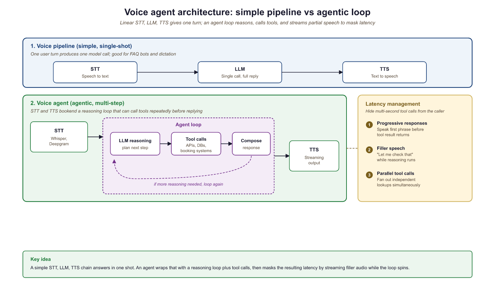

"I can hear you perfectly. It is the understanding part that keeps me humble."
Echo, Latency-Conscious AI Agent
Voice agents combine the naturalness of speech with the power of agentic tool use. Where a voice pipeline converts speech to text, calls an LLM, and speaks the response, a voice agent can also book appointments, look up orders, modify records, and take actions in external systems, all through natural spoken conversation. The central engineering challenge is latency: users expect sub-500ms response times, but the agent may need to call tools, wait for results, and compose a thoughtful answer. This section covers production voice agent platforms (OpenAI Realtime API, LiveKit Agents, Pipecat), latency management techniques, and the emerging speech-to-speech paradigm that eliminates the STT/TTS pipeline entirely.
Prerequisites
This section extends the voice and multimodal foundations from Section 40.6, which covers the individual STT, TTS, and pipeline components. Familiarity with tool use and Section 26.1 from Part VI will help you understand how voice agents combine speech processing with agentic capabilities.
40.1.1 From Voice Pipelines to Voice Agents
Section 40.1 introduced the core components of voice interfaces: speech-to-text, text-to-speech, and the pipeline that connects them through an LLM. A voice agent goes further by adding agentic capabilities to this pipeline. A voice agent can use tools, access databases, call APIs, and take actions in external systems, all while maintaining a natural spoken conversation. This transforms voice from a simple I/O modality into a complete interaction paradigm where users accomplish complex tasks through speech alone.

and response composition, then to streaming TTS), with latency management techniques (progressive responses, filler speech, parallel tool calls) shown alongsideThe key architectural difference between a voice pipeline and a voice agent is the presence of an AI agent. In a simple voice pipeline, audio goes in and audio comes out, with a single LLM call in between. In a voice agent, the LLM may decide to invoke tools before responding, and those tool calls may take variable amounts of time. This creates a fundamental tension: the user is waiting in real time for a spoken response, but the agent needs time to think, call APIs, and compose its answer. Managing this tension through progressive responses, filler speech, and parallel execution is the central engineering challenge of voice agents.
Several platforms have emerged to simplify voice agent development. OpenAI Realtime API provides speech-to-speech capabilities with built-in function calling, eliminating the need for separate STT and TTS services. LiveKit Agents offers an open-source framework for building voice agents with pluggable STT, LLM, and TTS providers. Pipecat provides a pipeline-based framework for composing voice AI applications from modular components. Vapi and Bland.ai offer managed platforms for telephony-based voice agents.
The critical metric for voice agents is time-to-first-byte of audio response (TTFB), not total response time. Users tolerate a longer total response if they hear the agent begin speaking within 500ms of finishing their own utterance. This means the architecture must prioritize streaming: start generating speech as soon as the first tokens of the LLM response are available, while the rest of the response is still being generated. The streaming patterns in Section 11.2 are not optional for voice agents; they are the foundation of acceptable latency.
Early telephone IVR systems gave callers about 8 seconds of patience before they started mashing the "0" key for a human operator. Voice AI agents get roughly the same grace period, except now the caller expects the agent to understand "I want to talk to a real person" spoken in frustration at double speed.
40.1.2 OpenAI Realtime API: Speech-to-Speech Agents
The OpenAI Realtime API represents a paradigm shift in voice agent architecture. Instead of the traditional three-stage pipeline (STT, LLM, TTS), the Realtime API accepts audio input directly and produces audio output directly, using a single multimodal model. This eliminates two network round trips and two transcription/synthesis steps, dramatically reducing latency. The model also has access to acoustic information (tone, emphasis, pacing) that is lost in text-only pipelines.
The Realtime API uses a WebSocket connection with a session-based architecture. The client sends audio frames and receives audio frames, with the model handling turn detection, interruption, and function calling within the session. Function calling works the same way as in the Chat Completions API, but the model can speak a filler phrase ("Let me look that up for you") while executing the function, maintaining conversational flow.
import asyncio
import websockets
import json
import base64
REALTIME_URL = "wss://api.openai.com/v1/realtime?model=gpt-4o-realtime-preview"
async def voice_agent():
"""Connect to OpenAI Realtime API for speech-to-speech interaction."""
headers = {
"Authorization": f"Bearer {OPENAI_API_KEY}",
"OpenAI-Beta": "realtime=v1",
}
async with websockets.connect(REALTIME_URL, extra_headers=headers) as ws:
# Configure the session with tools and voice
await ws.send(json.dumps({
"type": "session.update",
"session": {
"modalities": ["text", "audio"],
"voice": "alloy",
"instructions": (
"You are a helpful customer service agent for Acme Corp. "
"You can look up orders, check shipping status, and process "
"returns. Be concise and friendly."
),
"tools": [
{
"type": "function",
"name": "lookup_order",
"description": "Look up an order by order ID or customer email",
"parameters": {
"type": "object",
"properties": {
"order_id": {"type": "string"},
"email": {"type": "string"},
},
},
},
{
"type": "function",
"name": "check_shipping",
"description": "Check shipping status for an order",
"parameters": {
"type": "object",
"properties": {
"order_id": {"type": "string"},
},
"required": ["order_id"],
},
},
],
"turn_detection": {
"type": "server_vad",
"threshold": 0.5,
"silence_duration_ms": 500,
},
},
}))
# Main event loop: process audio and tool calls as they arrive
async for message in ws:
event = json.loads(message)
if event["type"] == "response.audio.delta":
# Stream audio chunks to the speaker
audio_bytes = base64.b64decode(event["delta"])
await play_audio_chunk(audio_bytes)
elif event["type"] == "response.function_call_arguments.done":
# Execute tool call and return result
result = await execute_tool(
event["name"],
json.loads(event["arguments"]),
)
await ws.send(json.dumps({
"type": "conversation.item.create",
"item": {
"type": "function_call_output",
"call_id": event["call_id"],
"output": json.dumps(result),
},
}))
# Trigger the model to continue speaking
await ws.send(json.dumps({"type": "response.create"}))response.audio.delta chunks for immediate playback. Tool calls are handled mid-conversation without breaking the audio stream.40.1.3 LiveKit Agents: Open-Source Voice Agent Framework
Choose the OpenAI Realtime API when you want the fastest time to prototype and lowest integration complexity. Choose LiveKit Agents when you need provider flexibility, cost optimization, or the ability to self-host. In production, many teams start with the Realtime API for rapid validation and migrate to LiveKit when they need to control costs or swap in specialized models for specific pipeline stages.
LiveKit Agents provides an open-source framework for building voice agents with pluggable components. Unlike the OpenAI Realtime API (which bundles STT, LLM, and TTS into a single service), LiveKit Agents lets you mix and match providers: Deepgram for STT, any LLM for reasoning, and ElevenLabs or Cartesia for TTS. This modularity gives you control over cost, latency, and quality at each stage, and avoids vendor lock-in to any single provider.
LiveKit handles the real-time transport layer (WebRTC), which is the hardest part to build from scratch. It manages audio encoding, packet loss recovery, echo cancellation, and adaptive bitrate, freeing you to focus on the agent logic. The framework also provides built-in support for turn detection, interruption handling, and concurrent tool execution.
from livekit.agents import AgentSession, Agent, RoomInputOptions
from livekit.agents.llm import function_tool
from livekit.plugins import deepgram, openai, cartesia
class CustomerServiceAgent(Agent):
"""Voice agent with tool-calling capabilities."""
def __init__(self):
super().__init__(
instructions=(
"You are a customer service agent for Acme Corp. "
"Help users with order lookups and shipping inquiries. "
"Keep responses concise since this is a voice conversation."
),
)
@function_tool()
async def lookup_order(self, order_id: str) -> str:
"""Look up order details by order ID."""
order = await db.get_order(order_id)
if not order:
return f"No order found with ID {order_id}."
return (
f"Order {order_id}: {order.item_count} items, "
f"total ${order.total:.2f}, status: {order.status}."
)
@function_tool()
async def check_shipping(self, order_id: str) -> str:
"""Check the current shipping status of an order."""
tracking = await shipping_api.get_status(order_id)
return (
f"Order {order_id} shipped via {tracking.carrier}. "
f"Tracking: {tracking.number}. "
f"Estimated delivery: {tracking.eta}."
)
async def entrypoint(ctx):
"""LiveKit agent entrypoint."""
session = AgentSession(
stt=deepgram.STT(model="nova-3"),
llm=openai.LLM(model="gpt-4o"),
tts=cartesia.TTS(voice="customer-service-female"),
)
await session.start(
room=ctx.room,
agent=CustomerServiceAgent(),
room_input_options=RoomInputOptions(),
)@function_tool decorator exposes methods as callable tools that the LLM can invoke during conversation. LiveKit handles the real-time audio transport, turn detection, and speech pipeline. Each component (STT, LLM, TTS) is independently configurable and swappable.Who: Carlos, CTO of a 12-person startup building a voice-based appointment scheduling assistant for dental clinics.
Situation: The team had a working prototype using the OpenAI Realtime API and needed to decide whether to keep it or migrate to a pipeline architecture (LiveKit + Deepgram + Claude + ElevenLabs) before launching to their first 20 clinic customers.
Problem: The Realtime API delivered excellent latency (under 400ms voice-to-voice) and was simple to maintain, but locked the team into OpenAI for all three stages (STT, LLM, TTS). Dental terminology recognition was poor with OpenAI's built-in STT, and clinics wanted a specific "warm receptionist" voice that only ElevenLabs offered. Switching any single component required abandoning the Realtime API entirely.
Decision: Carlos kept the Realtime API for the initial launch to hit the 6-week deadline, while the team built the pipeline architecture in parallel. After launch, they migrated clinic by clinic over 4 weeks, using A/B testing to verify that the pipeline matched or exceeded the Realtime API's user experience. The model landscape discussion in Chapter 7 reinforced this approach: the best provider today may not be the best tomorrow.
Result: The pipeline architecture added 80ms of latency (still under 500ms total) but improved dental term recognition by 31% (Deepgram with custom vocabulary) and increased patient satisfaction scores by 18% (ElevenLabs voice). Monthly API costs dropped 22% because Claude was cheaper than GPT-4o for their use case.
Lesson: Start with the Realtime API when speed of development matters most, but design for migration to a pipeline architecture. The flexibility to swap individual components (STT, LLM, TTS) independently becomes critical as domain-specific requirements and cost pressures emerge.
40.1.4 Latency Optimization for Voice Agents
Latency is the defining constraint of voice agent engineering. Every millisecond of silence after the user finishes speaking degrades the experience. The total voice-to-voice latency budget is roughly 500ms for a natural-feeling conversation, and this budget must be shared among STT (50 to 200ms), LLM inference (100 to 500ms), and TTS (50 to 200ms). With tool calls, the budget expands but user expectations remain high.
Several techniques help meet tight latency budgets. Streaming at every stage means starting TTS synthesis as soon as the first LLM tokens arrive, rather than waiting for the complete response. Speculative STT begins processing partial utterances before the user finishes speaking, using voice activity detection to identify likely end-of-turn points. Pre-warming keeps WebSocket connections and model sessions alive between turns to avoid cold-start latency. Filler responses let the agent say "Let me check on that" immediately while a tool call executes in the background.
import asyncio
import time
class LatencyOptimizedVoiceAgent:
"""Voice agent with aggressive latency optimization."""
def __init__(self, stt, llm, tts):
self.stt = stt
self.llm = llm
self.tts = tts
self.metrics = LatencyMetrics()
async def handle_utterance(self, audio_stream):
"""Process user speech with overlapping pipeline stages."""
start = time.monotonic()
# Stage 1: Streaming STT (partial results as user speaks)
transcript = ""
async for partial in self.stt.stream_transcribe(audio_stream):
transcript = partial.text
if partial.is_final:
break
stt_done = time.monotonic()
self.metrics.record("stt_latency", stt_done - start)
# Stage 2: Check if this needs a tool call
needs_tool = await self._quick_intent_check(transcript)
if needs_tool:
# Start filler speech immediately (non-blocking)
filler_task = asyncio.create_task(
self.tts.speak("One moment, let me look that up.")
)
# Execute tool in parallel with filler speech
tool_result = await self._execute_tool(transcript)
await filler_task # Ensure filler finishes before response
llm_input = f"User asked: {transcript}\nTool result: {tool_result}"
else:
llm_input = transcript
# Stage 3: Stream LLM response directly to TTS
llm_start = time.monotonic()
token_buffer = ""
first_audio = False
async for token in self.llm.stream(llm_input):
token_buffer += token
# Send to TTS in sentence-sized chunks for natural speech
if self._is_sentence_boundary(token_buffer):
tts_task = asyncio.create_task(
self.tts.speak_streamed(token_buffer)
)
if not first_audio:
self.metrics.record("ttfb", time.monotonic() - start)
first_audio = True
token_buffer = ""
# Flush remaining tokens
if token_buffer:
await self.tts.speak_streamed(token_buffer)
total = time.monotonic() - start
self.metrics.record("total_latency", total)
def _is_sentence_boundary(self, text: str) -> bool:
"""Detect natural speech boundaries for TTS chunking."""
return any(text.rstrip().endswith(p) for p in [".", "!", "?", ",", ":"])40.1.5 Turn-Taking, Interruption, and Conversation Flow
Natural conversation involves constant negotiation about who is speaking. Humans use subtle cues (intonation, pauses, gaze) to manage turn-taking seamlessly. Voice agents must approximate this behavior using voice activity detection (VAD) and endpointing algorithms. Poor turn-taking is the most common complaint about voice agents: either the agent cuts off the user (premature endpointing) or it waits too long after the user finishes (excessive silence).
Interruption handling is equally important. Users frequently interrupt voice agents to correct themselves, provide additional context, or redirect the conversation. When interrupted, the agent must immediately stop speaking, process the interruption, and respond to the new input. This requires canceling in-flight TTS audio, discarding any queued speech, and reprocessing the conversation state with the interruption included.
import asyncio
from enum import Enum
class TurnState(Enum):
LISTENING = "listening"
PROCESSING = "processing"
SPEAKING = "speaking"
class TurnManager:
"""Manage conversational turn-taking with interruption support."""
def __init__(self, vad, agent):
self.vad = vad
self.agent = agent
self.state = TurnState.LISTENING
self._speaking_task: asyncio.Task = None
self._audio_queue = asyncio.Queue()
async def on_audio_frame(self, frame):
"""Process incoming audio frames for turn detection."""
speech_detected = await self.vad.process_frame(frame)
if self.state == TurnState.SPEAKING and speech_detected:
# User is interrupting; stop speaking immediately
await self._handle_interruption()
elif self.state == TurnState.LISTENING and speech_detected:
self._audio_queue.put_nowait(frame)
elif self.state == TurnState.LISTENING and not speech_detected:
# Check if user finished their turn (silence after speech)
if not self._audio_queue.empty():
silence_duration = await self.vad.get_silence_duration()
if silence_duration > 0.5: # 500ms silence threshold
await self._end_of_turn()
async def _handle_interruption(self):
"""Handle user interruption during agent speech."""
# Cancel current speech output
if self._speaking_task and not self._speaking_task.done():
self._speaking_task.cancel()
try:
await self._speaking_task
except asyncio.CancelledError:
pass
# Clear any queued audio
await self.agent.tts.flush()
# Switch to listening mode
self.state = TurnState.LISTENING
self._audio_queue = asyncio.Queue()
async def _end_of_turn(self):
"""Process the user's completed utterance."""
self.state = TurnState.PROCESSING
# Collect all audio frames from the queue
frames = []
while not self._audio_queue.empty():
frames.append(self._audio_queue.get_nowait())
# Process and respond
self._speaking_task = asyncio.create_task(
self.agent.handle_utterance(frames)
)
self.state = TurnState.SPEAKINGVoice activity detection (VAD) tuning is highly environment-dependent. A silence threshold that works well in a quiet office may cause constant false triggers in a noisy environment (car, coffee shop, open office). Production voice agents should adapt their VAD parameters based on the ambient noise level detected at the start of the session. Some frameworks (LiveKit, Pipecat) provide adaptive VAD out of the box. If you build your own, plan to spend significant time on VAD tuning across environments. Also consider that hold music, keyboard clicks, and background conversations can all trigger false speech detection.
40.1.6 Production Deployment and Telephony Integration
Deploying voice agents to production introduces infrastructure concerns that do not exist in text-based systems. Audio processing requires low-latency networking (WebRTC or WebSocket), sufficient compute for real-time transcription and synthesis, and geographic proximity to users to minimize network latency. Telephony integration (connecting to phone numbers via SIP/PSTN) adds another layer of complexity with carrier negotiations, number provisioning, and compliance requirements (call recording consent, emergency service obligations).
The deployment architecture typically involves a WebRTC/SIP media server (LiveKit, Twilio, Vonage) that handles the real-time audio transport, connected to your agent logic running as a stateful service. Each concurrent call requires a dedicated agent process with its own STT, LLM, and TTS sessions. Scaling voice agents means scaling these stateful processes, which is more complex than scaling stateless HTTP services. Session affinity, graceful draining (letting active calls finish before shutting down a node), and health checking all require careful implementation.
from livekit.agents import AutoSubscribe, WorkerOptions, cli
from livekit.plugins import deepgram, openai, elevenlabs
# Production configuration for a telephony voice agent
async def entrypoint(ctx):
"""Production voice agent with telephony support."""
# Select TTS voice based on call metadata
caller_language = ctx.room.metadata.get("language", "en")
voice_id = VOICE_MAP.get(caller_language, "default-english")
session = AgentSession(
stt=deepgram.STT(
model="nova-3",
language=caller_language,
# Telephony-optimized settings
encoding="mulaw",
sample_rate=8000,
channels=1,
endpointing=300, # Faster endpointing for phone calls
),
llm=openai.LLM(
model="gpt-4o-mini", # Faster model for voice latency
temperature=0.7,
),
tts=elevenlabs.TTS(
voice_id=voice_id,
model="eleven_turbo_v2_5",
output_format="pcm_mulaw", # Telephony codec
),
)
# Configure session with call context
session.on("agent_started_speaking", lambda: log_event("agent_speaking"))
session.on("agent_stopped_speaking", lambda: log_event("agent_silent"))
session.on("user_started_speaking", lambda: log_event("user_speaking"))
await session.start(
room=ctx.room,
agent=CustomerServiceAgent(),
)
# Worker configuration for production scaling
if __name__ == "__main__":
cli.run_app(
WorkerOptions(
entrypoint_fnc=entrypoint,
auto_subscribe=AutoSubscribe.AUDIO_ONLY,
max_retry=3,
)
)from dataclasses import dataclass
from typing import Optional
import time
@dataclass
class VoiceSessionMetrics:
"""Metrics for monitoring voice agent quality."""
session_id: str
start_time: float
turns: int = 0
total_stt_latency_ms: float = 0
total_llm_latency_ms: float = 0
total_tts_latency_ms: float = 0
interruptions: int = 0
tool_calls: int = 0
errors: int = 0
user_satisfaction: Optional[float] = None
@property
def avg_turn_latency_ms(self) -> float:
if self.turns == 0:
return 0
total = self.total_stt_latency_ms + self.total_llm_latency_ms + self.total_tts_latency_ms
return total / self.turns
@property
def duration_seconds(self) -> float:
return time.time() - self.start_time
def to_otel_attributes(self) -> dict:
"""Export metrics as OTel span attributes."""
return {
"voice.session_id": self.session_id,
"voice.turns": self.turns,
"voice.avg_turn_latency_ms": self.avg_turn_latency_ms,
"voice.interruptions": self.interruptions,
"voice.tool_calls": self.tool_calls,
"voice.errors": self.errors,
"voice.duration_s": self.duration_seconds,
}to_otel_attributes method integrates with the OpenTelemetry instrumentation from Section 42.9 for unified observability across text and voice channels.Who: Yuki, a voice platform engineer at a restaurant technology company.
Situation: She was building a production voice agent for restaurant reservations that needed to feel as natural as talking to a human host. The product team set a target of 800ms total voice-to-voice latency for non-tool-call turns.
Problem: Early prototypes had 1.4-second response delays, causing callers to say "hello?" or hang up. Yuki needed to identify where the latency was hiding and allocate a strict budget across each pipeline stage.
Decision: She instrumented every stage and allocated the 800ms budget as follows: STT with Deepgram Nova-3 streaming at 150ms (end of speech to final transcript), LLM with GPT-4o-mini at 200ms to first token (streaming tokens every 20ms thereafter), TTS with Cartesia Sonic at 130ms (text to first audio byte), and 50ms for network overhead. For tool-call turns (checking reservation availability), the agent played a filler phrase ("Let me check availability for that date") lasting 1.5 seconds, during which the API call completed in under 500ms.
Result: Total time-to-first-audio-byte came in at 530ms, well within the 800ms budget. Caller hang-up rates dropped from 23% to 6%, and the filler-phrase strategy made tool-call turns feel like continuous conversation even though the total turn time was 2 seconds.
Lesson: Voice agent latency must be budgeted per stage, not optimized in aggregate. Instrument each component independently, and use filler responses to mask unavoidable delays from tool calls or complex reasoning.
Multimodal voice agents are expanding beyond audio to combine speech, vision, and gesture recognition, enabling agents that understand what users point at while talking. Emotion-aware synthesis adapts TTS prosody based on detected user sentiment, making agents more empathetic. Personalized voice cloning allows agents to speak in familiar voices (with appropriate consent), improving engagement in assistive technology. Research into ultra-low-latency models targets sub-100ms response times by co-designing model architecture and inference infrastructure for real-time speech.
- Voice agents combine STT, LLM, and TTS in a pipeline where each stage adds latency; total round-trip must stay under 300ms for natural conversation.
- End-to-end voice models eliminate the text bottleneck and preserve emotional and prosodic information lost in cascaded pipelines.
- Voice-specific challenges (barge-in, silence detection, misrecognition recovery) require dedicated engineering beyond text chatbot patterns.
- Streaming at every stage (streaming STT, streaming LLM tokens, streaming TTS) is essential for reducing perceived latency.
Show Answer
The three stages are speech-to-text (STT), LLM processing, and text-to-speech (TTS). The primary latency bottleneck is typically the LLM processing stage, though end-to-end latency must stay under 300ms for natural conversational flow.
Show Answer
Voice interactions are ephemeral and real-time; users cannot scroll back to re-read a response. Voice agents must handle misrecognition, interruptions (barge-in), and silence detection gracefully, often requiring confirmation loops and progressive clarification.
Show Answer
End-to-end models preserve prosody, emotion, and paralinguistic cues that are lost in the text intermediate representation of cascaded pipelines. They also reduce cumulative latency by eliminating the STT and TTS stages.
Exercises
Build a minimal voice agent using the OpenAI Realtime API that can answer questions about weather (using a mock weather tool). Test the end-to-end flow from spoken question to spoken answer.
Answer Sketch
Set up a WebSocket connection to the Realtime API. Configure a session with a get_weather tool that returns hardcoded data. Record audio from the microphone, send it as base64-encoded frames, and play back the response audio chunks. When a function_call event arrives, return the mock result and trigger response.create to continue.
Build the same voice agent twice: once using the OpenAI Realtime API and once using a pipeline (Deepgram STT, GPT-4o-mini, ElevenLabs TTS). Measure and compare the time-to-first-audio-byte, total turn latency, and perceived conversation quality for 20 test utterances.
Answer Sketch
Instrument both implementations with timestamps at each stage boundary. For the pipeline version, measure STT completion time, LLM first token time, and TTS first audio byte time separately. The Realtime API will typically show 30 to 50% lower TTFB due to eliminating intermediate serialization steps. However, the pipeline version may offer better TTS quality (ElevenLabs vs. OpenAI voices) and lower cost for high-volume usage.
Implement an interruption handler that gracefully stops agent speech when the user starts talking, resumes from the interruption point if the user only said "um" or "uh," and restarts from scratch if the user asked a new question. Test with at least five interruption scenarios.
Answer Sketch
Extend the TurnManager from Code Fragment 40.1.4. On interruption, capture the interrupted text position. Run the user's interruption through STT and classify it: if it is a filler word (UM, UH, YEAH), resume from the interrupted position; if it is a question or correction, discard the remaining response and process the new input. Use a small classifier (regex patterns or a fast LLM call) for the classification step.
Design an evaluation framework for a voice agent. Define metrics for latency, accuracy, conversation quality, and user satisfaction. How would you run automated tests on a voice agent compared to a text-based chatbot?
Answer Sketch
Metrics: TTFB (P50, P95), total turn latency, task completion rate, word error rate (STT accuracy), interruption recovery rate, and post-call user rating. For automated testing, create a test suite of audio recordings with expected transcripts and expected agent actions. Run them through the agent pipeline and compare outputs. Use text-based testing (bypass STT/TTS) for logic testing, and end-to-end audio testing for integration. The evaluation framework from Chapter 42 applies, with additional voice-specific metrics.